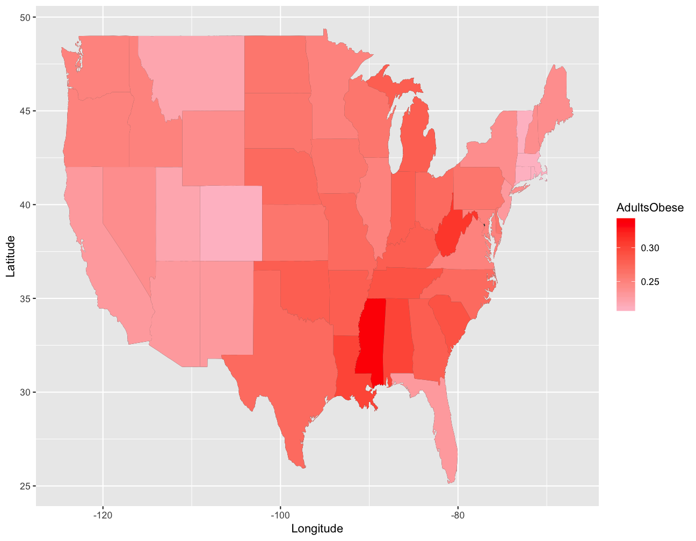
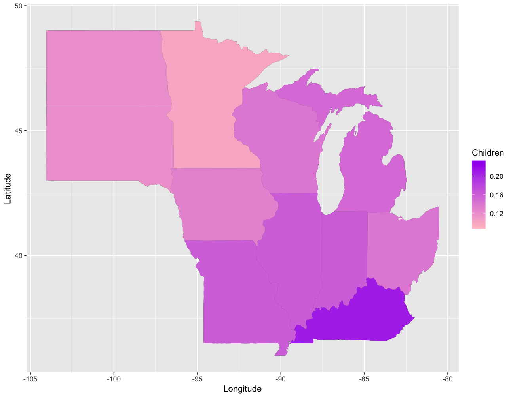
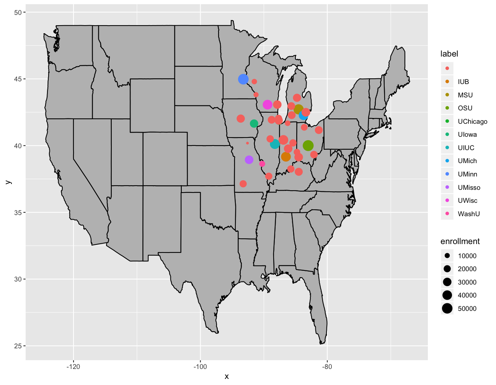
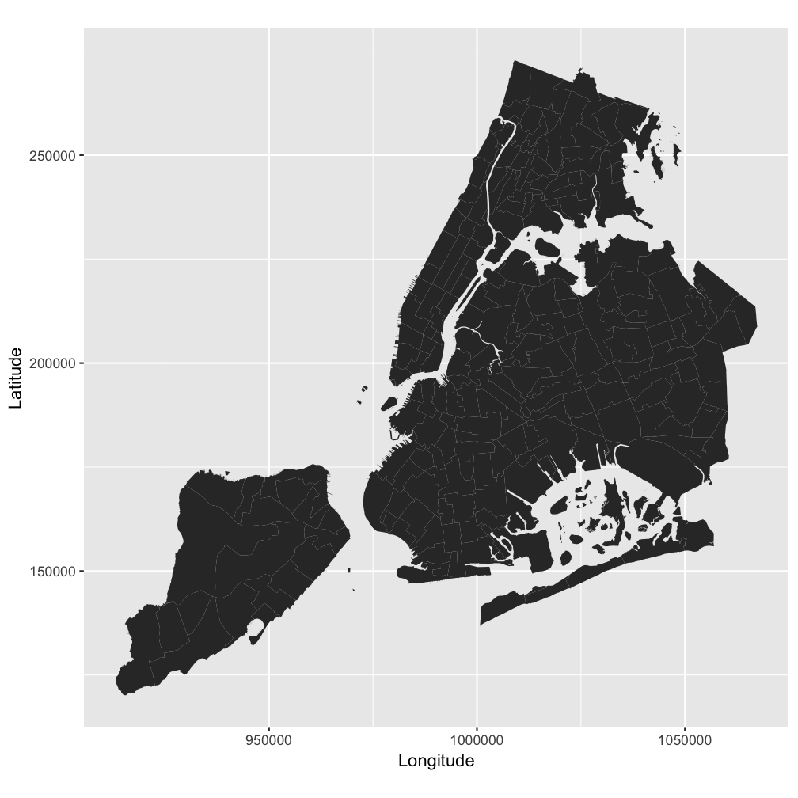
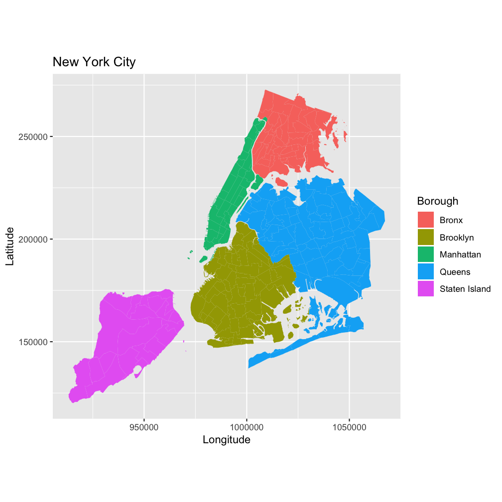

vignette.RmdfredMaps is a package designed to simplify mapping of the continental United States for beginner and intermediate R users. This packages simplifies the graphing process from start to finish by assisting with 1) data import, 2) data management, and 3) mapping.
This document provides examples for each function within fredMaps using the dataframes included in the package.
In order to build maps with ggplot2, the data frame of interest needs to have a column of state names which matches the column of state names in the data frame returned by map_data("state"). The variable in map_data("state") is called “region”, and the state names are all lowercase.
However, the problem is that the data frame we’re using may not have a state names column “normalized” to the format of the “region” column in the ggplot2 data frame. Our dataset may come with a column of state names that is abbreviated, all uppercase, capitalized, etc. Getting our column of state names to match can be a tedious and time consuming step. This is where the stateNames function is useful.
The stateName function allows the user to specify the format of the state name and defaults to unabbreviated, lower case names to match the ggplot2 data frame.
Let’s say we want to convert a column of uppercase state abbreviations to lowercase, unabbreviated state names. By simply passing each row to the function stateNames, we can convert it to the form we want.
library(fredMaps)
# on a single observation
stateNames("NY")
#> [1] "new york"
# on a vector containing state names
stateNames(c("New york", "Boston", "ct"), tolower = FALSE, abb = TRUE, replace.na = TRUE)
#> [1] "NY" NA "CT"Note: if a non-state is inputted into stateNames, the user can specificy if they want it replaced replace with NAs or have it return without any changes made.
An important step when working with data is merging two data frames. This step can become tedious if the data is obtained from different sources and the column to merge on is not reported in the same format. This can often be the case when working with state data since states can be referenced by their full name or abbrevation, and with different types of capitalization.
mergeOnState allows users to merge two datasets on a column that contains state names or abbreviations and does not require that the columns are in the same format.
Let’s see how this function works using gdp and bingedrinking, two data frames that come with fredMaps.
First, let’s look at the data frames.
library(fredMaps)
head(gdp)
#> X gdpPerCap
#> 1 Alabama 36750
#> 2 Alaska 66835
#> 3 Arizona 38276
#> 4 Arkansas 36259
#> 5 California 56851
#> 6 Colorado 52558
head(bingedrinking)
#> LocationAbbr BingeDrinking Group
#> 1 AL 13.8 Overall
#> 2 AK 17.8 Overall
#> 3 AZ 16.5 Overall
#> 4 AR 15.9 Overall
#> 5 CA 16.5 Overall
#> 6 CO 19.5 Overallgdp is a dataframe with two columns:
X, which contains state names and
gdpPerCap, which contains nominal GDP per capita in a given state for the year 2015.
bingedrinking is a dataframe with three columns:
LocationAbbr, which contains state names as abbrevations,
BingeDrinking, which contains binge drinking prevalence among adults aged >= 18 years, and
Group, which indicates a subset of the population (Overall, Male, Female)
Normally, prior to merging, it would be necessary to convert either the abbrevations to state names or vice versa and to make sure that the two columns are in the same case. However, mergeOnState allows the user to do this all in one step.
We are ready to merge!
drinking_GDP <- mergeOnState(bingedrinking, LocationAbbr, gdp, X, merge = "inner")
#> Warning: DC is not a state
#> Warning: DC is not a state
#> Warning: DC is not a state
#> Warning: District of Columbia is not a state
head(drinking_GDP)
#> LocationAbbr BingeDrinking Group X gdpPerCap
#> 1 AL 13.8 Overall Alabama 36750
#> 2 AK 17.8 Overall Alaska 66835
#> 3 AZ 16.5 Overall Arizona 38276
#> 4 AR 15.9 Overall Arkansas 36259
#> 5 CA 16.5 Overall California 56851
#> 6 CO 19.5 Overall Colorado 52558Now that we have our data merged, we can move on to our analysis! Woo!
cor(drinking_GDP$BingeDrinking, drinking_GDP$gdpPerCap)
#> [1] 0.2239643fredMaps and fredMapsPoint
Now that we are done with our data management, let’s do some plotting.
fredMaps and fredMapsPoint are functions designed to make plotting quick and easy. Regular ggplot2 code for spatial analysis can be lengthy and complex even when creating a basic plot. These functions are designed to enable the user to map their state-level data in one step.
fredMaps
fredMaps works by taking 6 arguments which are supplied to what would have otherwise been cumbersome ggplot2 code: a data frame, a variable in the dataframe with values to plot, a color representing lower values, a color representing higher values, and a list of states.
Using ggplot2 functions geom_map and map_data, which extracts shape files for the continental United States, fredMaps prints the spatial polygons representing states, which are filled with user specificed colors.
Unlike fredMaps, fredMapsPoint plots the map of the continental United States with points whose size represents a numeric variable in a data frame and color represents another numeric, factor, or character variable in the data frame. In addition, the function also takes the variable in the data frame containing latitudes and longitudes for points.
Let’s work through some examples together.
Let’s use the obesity data set to plot average adult obesity rates by state. States with lower values of adult obesity rate are colored pink, and states with higher values of adult obesity are colored red. Feel free to change the colors of the plot by change the arugements low and high. The fredMaps function will allow us to do this in one line:
fredMaps(obese, AdultsObese, State, low="pink", high="red")
As seen from our plot, Mississippi has the highest average adult obesity rate.
In some cases we may only want a subset of states. For example, let’s say we want to compare average child obesity rates only for states in the midwest. We can do this by specifying the states argument in fredMaps:
fredMaps(obese, Children, State, low = "pink", high = "purple",
states = c("illinois", "indiana", "iowa", "kentucky",
"michigan", "minnesota","missouri",
"north dakota", "ohio", "south dakota",
"wisconsin"))
Zoning on midwestern states, we can see that Minnesota has the lowest average childhood obesity rate.
While visualizing data by filling states with all kinds of colors can be helpful, a potential issue with these kinds of maps is that the human eye tends to associate larger shapes with with larger magnitudes or importance. Hence, one may associate larger states with higher obesity rates. To get around this problem, we can overlay points on the map instead of coloring the states. The size and color of these points can help us capture additional information.
Let’s use the school_enrollments dataset to visualize the total number of students enrolled as well as school labels by state. By inputting these variables and the variable names for latitudes and longitudes into fredMapsPoint, we can do just that:
fredMapsPoint(college_enrollment, size=enrollment, color=label, long=long, lat=lat)
fredMaps for Intermediate UsersfredMaps was built to help users map the continental United States. However, often, one might be interested in plotting non-standard geographical locations. If a user has a shapefile, they can use shapeToDF, shapeToMap, and dfToMap to plot their own data.
For reference, a shapefile is a group of files containing feature geometry and feature attribute data. There are three main feature geometry types: points, lines, and polygons. fredMaps allows users to plot shapefiles containing polygons.
There are many free, online sources for shapefiles. Below are some websites that have free shapefiles available to download:
When downloaded, shapefiles are stored as a zip file that must be extracted. At minimum, the folder must contain a .shp file, however it may often contain additional files.
shapeToDF, shapeToMap, and dfToMap
shapeToDF, shapeToMap, and dfToMap simplify the process of reading in shapefiles and mapping using ggplot. Both shapeToDF and shapeToMap require the user to input the path to the folder containing the shapefile and the name of the shapefile without an extention.
Let’s use these functions to plot New York City neighborhoods using a shapefile that can be downloaded from the first link above.
The shapefile that we will be using is stored in a folder called nynta_18d. If we look inside the folder, there are 5 files:
nynta.shp.xml
nynta.prj
nynta.shx
nynta.dbf
nynta.shp
Notice that all of the files contain the same “name”, but have different file extensions. We will pass this “name” into the shapeToMap and shapeToDF function as the file argument.
shapeToMap
For a quick graph, let’s use shapeToMap to read in the shapefiles and create a graph all in one step.
shapeToMap("nynta_18d", "nynta")
#> OGR data source with driver: ESRI Shapefile
#> Source: "/Users/kellyjamrog/Documents/Wesleyan Year 4/QAC 358 - Advanced R/fredMaps/vignettes/nynta_18d", layer: "nynta"
#> with 195 features
#> It has 7 fields
Tah dah! A map of New York City!
shapeToDF and dfToMap
For users interested in a little more control, shapeToDF and dfToMap are a great option.
shapeToDF reads in shapefiles and outputs a dataframe that can be fed to dfToMap. One of the benefits of doing this process in two steps is that the user can specify a column to be used to color the map.
If the user prefers even more control, they can use the output of shapeToDF with their own ggplot2 code.
Finally, both shapeToMap and dfToMap return a ggplot2 object which allows users to overlay additional ggplot functions, including changing axis labels, titles, and colors.
shapeToDF and dfToMap
Let’s again plot New York City neighborhoods, but this time use shapeToDF and dfToMap to color in the different boroughs.
ny <- shapeToDF("nynta_18d", "nynta")
#> OGR data source with driver: ESRI Shapefile
#> Source: "/Users/kellyjamrog/Documents/Wesleyan Year 4/QAC 358 - Advanced R/fredMaps/vignettes/nynta_18d", layer: "nynta"
#> with 195 features
#> It has 7 fields
names(ny)
#> [1] "long" "lat" "order" "hole" "piece"
#> [6] "id" "group" "BoroCode" "BoroName" "CountyFIPS"
#> [11] "NTACode" "NTAName" "Shape_Leng" "Shape_Area"By looking at our dataframe, we notice that we have a BoroName column which we can use to fill in our map. Let’s also personalize this map by adding a title and label for the legend.
